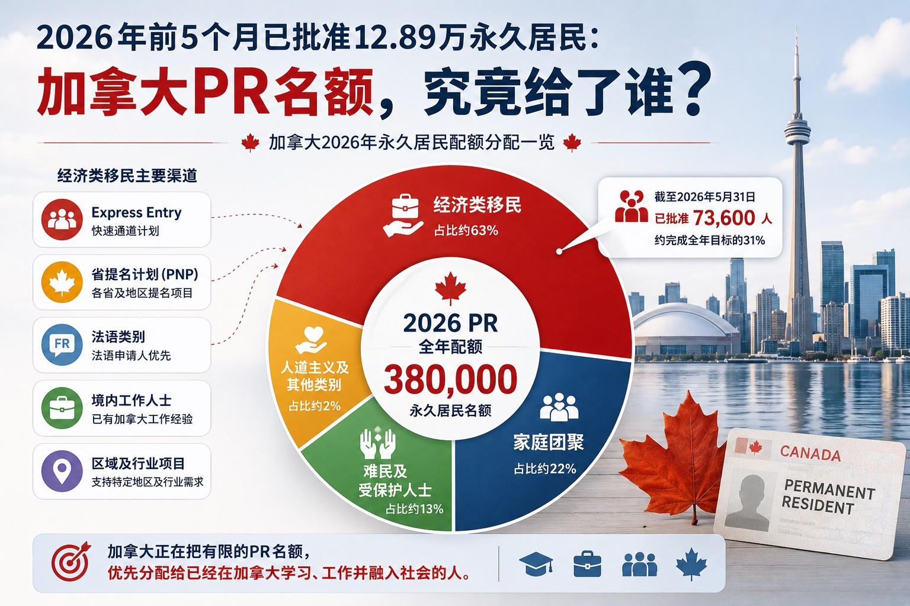

2026年前5个月已批准12.89万永久居民：加拿大PR名额，究竟给了谁？
Read in English
加拿大移民部（IRCC）近日上线新的永久居民 （Permanent Residence）统计页面， 首次以更加直观的方式公布2026年永久居民审批进度 及各类别配额使用情况。
截至2026年5月31日， 加拿大已批准128,900名新永久居民， 占全年380,000个移民目标的约34%。
真正值得关注的，并不是已经批准了多少人， 而是加拿大正在把永久居民名额优先留给哪些申请人。
一、经济类仍然是加拿大移民的核心
2026年，经济类移民仍然占据最大的永久居民配额。
截至5月底：
- 全年目标：239,800人；
- 已批准：73,600人。
经济类约占整个移民计划的六成以上。
这说明，尽管加拿大整体控制移民规模， 但对于能够进入劳动力市场的人才需求并没有改变。
未来，Express Entry、PNP以及各类经济项目 仍然是加拿大移民体系的核心。
二、加拿大仍在优先考虑已经生活在境内的人
IRCC再次强调： 近年来，大约一半的新永久居民， 在获得永久居民身份之前已经生活在加拿大。
这一方向与过去一年Express Entry持续针对 加拿大经验类（CEC）、法语类别、省提名 以及部分定向类别进行邀请完全一致。
对于已经在加拿大学习、工作， 并希望转为永久居民的人来说， 这仍然是一个积极信号。
三、法语及区域项目仍然持续受到支持
加拿大计划在2026年继续提高魁北克以外法语移民比例。
截至5月底， 已有9,900名法语申请人成为永久居民。
与此同时，各类区域及行业项目也继续推进，包括：
- Provincial Nominee Program（PNP）；
- Atlantic Immigration Program（AIP）；
- Rural Community Immigration Pilot（RCIP）；
- Home Care Worker Pilots。
这些项目都体现出相同的政策方向： 加拿大更希望通过区域及行业需求， 吸引真正能够长期留在当地发展的申请人。
我们可以看到什么？
综合近几个月的政策变化， 可以看到IRCC释放出的方向越来越一致：
- 经济类移民仍然是永久居民计划的核心；
- 更倾向把永久居民名额留给已经生活在加拿大的人；
- 法语申请人继续享有明显优势；
- 区域及行业试点项目的重要性持续提升。
加拿大并不是单纯减少永久居民， 而是在更加精准地配置有限的PR名额， 把机会优先给予已经融入加拿大社会、 能够快速进入劳动力市场的人。
我们的观察
对于计划申请加拿大永久居民的人来说， 真正重要的并不是已经批准了多少人， 而是理解加拿大正在优先选择哪些申请人。
如果您已经在加拿大学习或工作， 或正计划通过Express Entry、省提名 或其他经济项目申请永久居民， 现在正是重新评估自身优势、 规划长期移民策略的重要时机。
欢迎联系我们。 我们可以根据您的学历、工作经验、 语言能力及未来规划， 帮助您分析最适合的加拿大移民路径。
128,900 New Permanent Residents Approved in the First Five Months of 2026: Who Is Canada Prioritizing for PR?
Immigration, Refugees and Citizenship Canada (IRCC) has recently launched a new Permanent Residence statistics page, providing a clearer picture of Canada’s 2026 permanent resident admissions and the progress toward its annual immigration targets.
As of May 31, 2026, Canada had approved 128,900 new permanent residents, representing approximately 34% of its annual target of 380,000 admissions.
For prospective immigrants, however, the most important takeaway is not how many permanent residents have already been approved—it is who Canada is choosing to prioritize.
1. Economic Immigration Remains Canada’s Largest Source of Permanent Residents
Economic immigration continues to represent the largest share of Canada’s immigration plan.
As of the end of May:
- 2026 Target: 239,800;
- Approved: 73,600.
This means that nearly one-third of the annual economic immigration target has already been achieved.
Despite efforts to better manage overall immigration levels, Canada continues to prioritize applicants who can participate in the labour market and contribute to long-term economic growth.
Express Entry, Provincial Nominee Programs (PNPs), and other economic immigration pathways remain at the centre of Canada’s immigration system.
2. Canada Continues to Prioritize Applicants Already Living in Canada
One of the most significant messages from IRCC is that: in recent years, about half of all new permanent residents were already living in Canada as temporary residents before becoming permanent residents.
IRCC has indicated that this approach will continue, with priority given to individuals who have already studied, worked, paid taxes, and established themselves in Canada.
This direction is consistent with recent Express Entry draws targeting the Canadian Experience Class (CEC), French-language candidates, Provincial Nominee Program nominees, and other category-based selections.
For people who are already working or studying in Canada, this remains an encouraging policy signal.
3. French-Speaking Applicants and Regional Programs Continue to Receive Strong Support
Canada continues to expand opportunities for French-speaking immigrants outside Quebec.
By the end of May, 9,900 French-speaking applicants had already become permanent residents.
At the same time, regional and occupation-specific immigration programs continue to play an increasingly important role, including:
- Provincial Nominee Program (PNP);
- Atlantic Immigration Program (AIP);
- Rural Community Immigration Pilot (RCIP);
- Home Care Worker Pilots.
These initiatives demonstrate Canada’s continued focus on attracting applicants who can address regional labour shortages and build long-term careers in local communities.
What Do These Numbers Tell Us?
Looking at recent immigration policies alongside the latest statistics, Canada’s priorities have become increasingly clear:
- Economic immigration remains the foundation of Canada’s immigration system.
- More permanent resident spaces are being allocated to people who are already living in Canada.
- French-speaking applicants continue to enjoy strong policy support.
- Regional and sector-specific immigration programs are becoming increasingly important.
In other words, Canada is not expanding permanent residence admissions indiscriminately.
Instead, it is directing limited PR spaces toward applicants who have already established themselves in Canada and who can integrate into the labour market more quickly.
Ellen’s Policy Insight
The real value of these statistics is not simply knowing how many permanent residents have been approved—it is understanding who Canada is prioritizing for permanent residence.
If you are already studying or working in Canada, or are planning your immigration journey through Express Entry, a Provincial Nominee Program, or another economic pathway, now is an excellent time to reassess your profile and develop a long-term immigration strategy.
We would be happy to help you evaluate your education, work experience, language ability, and long-term goals to identify the immigration pathway best suited to your circumstances.